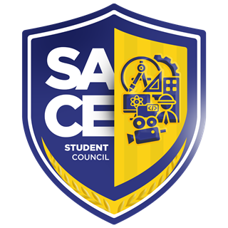
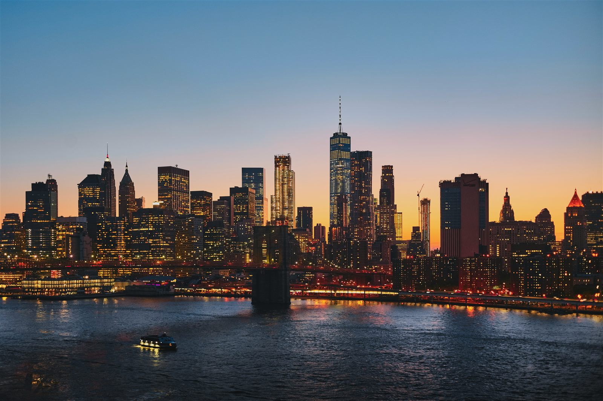
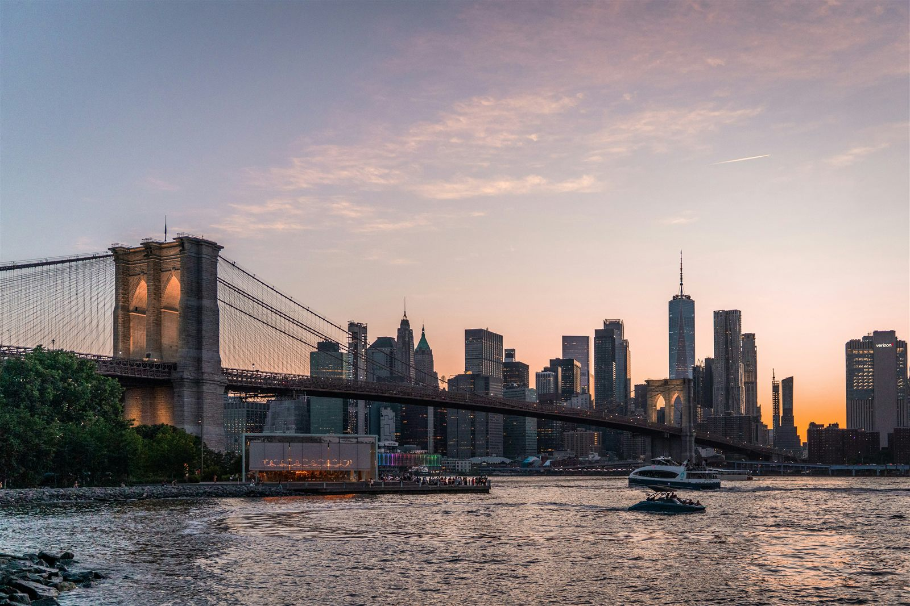
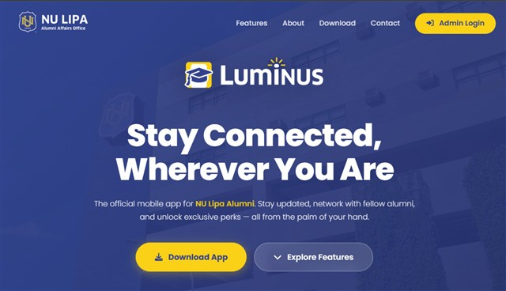
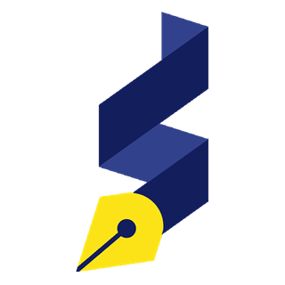
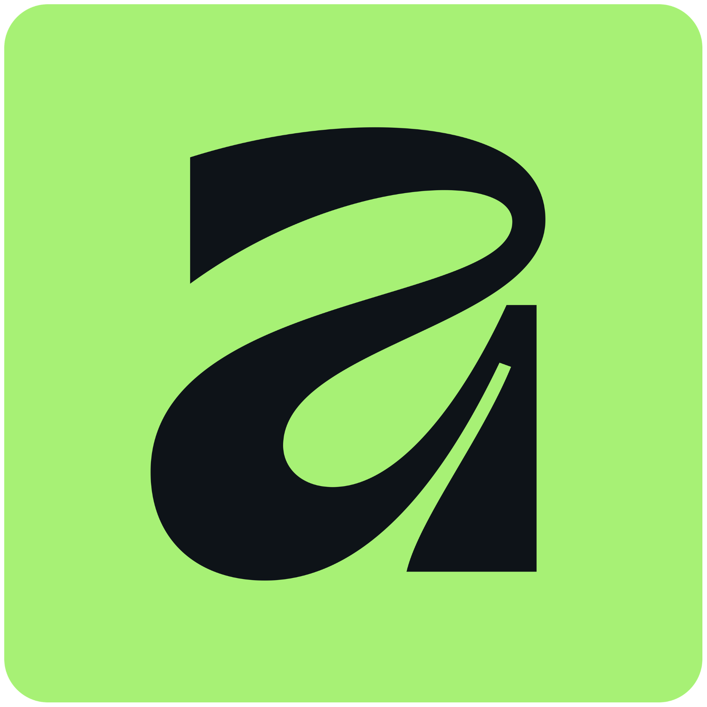
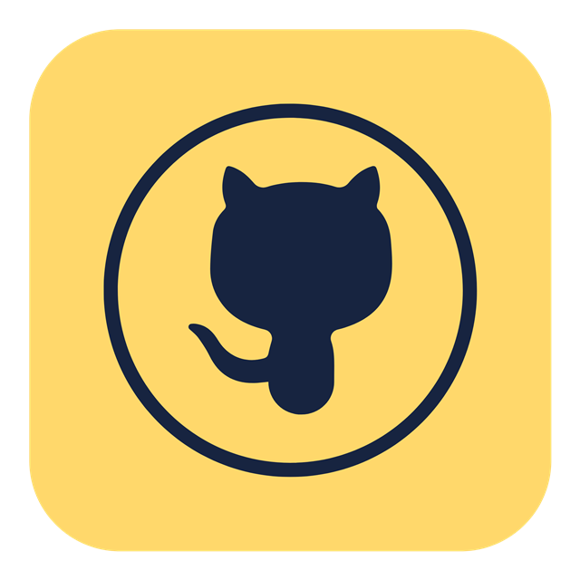
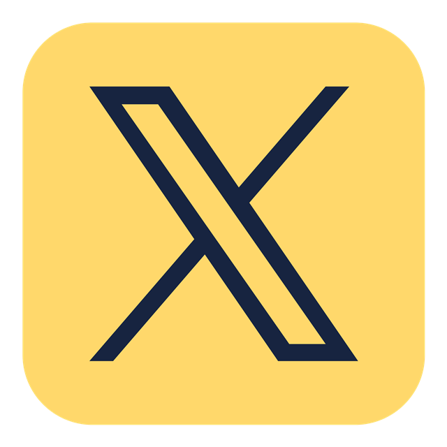
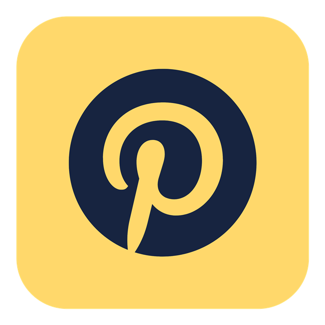
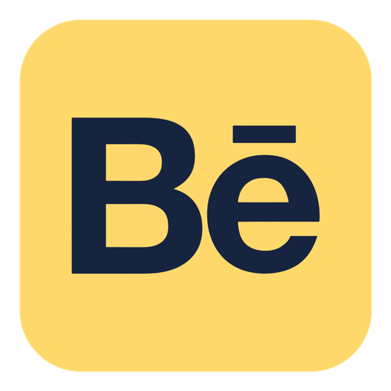

Creative Director
SACE Student Council · NU Lipa
Lead the Creatives Committee in digital media, event publicity, and publication materials.
 @johannescls
@johannescls
Johannes Claus Developer & designer
Mobile and web applications, thoughtful interfaces, and the logic that brings them to life. Made with a designer’s eye.


A LITTLE CITY ENERGY.
 Explore my work / DevelopmentView IT PortfolioSystems, websites, and mobile applications.Explore the portfolio
Explore my work / DevelopmentView IT PortfolioSystems, websites, and mobile applications.Explore the portfolio
Through systems, stories, and a little creative instinct.
Here’s a glimpse of both sides of my work.
LumiNUs brings alumni information, identity, and community together across mobile and web. I served as project lead and web admin developer, and helped develop the mobile app.
Explore LumiNUs
Publication materials for the NU Lipa Marketing Office.

Anniversary artwork and student council stories.
Curious about how it works.
Careful about how it feels.
I’m Johannes Emmanuel A. Claus, a BS Information Technology student at NU Lipa, specializing in Mobile & Web Applications. I build mobile and web systems, explore UI/UX, and enjoy making the logic behind an interface work as well as the interface looks.
As our capstone team’s project lead and web admin developer, I helped organize the work, guide the team through our Capstone Project courses, and develop both the web admin side and mobile app. That experience shaped how I approach a build: understand the process, connect the pieces, and keep the people using it in mind.
My creative work runs alongside my technical work. As a Student Graphic Designer with the NU Lipa Marketing Office, I create print and digital campaign materials. I also serve as Creative Director of the SACE Student Council, bringing visual identity and student stories to life.
Places where I've learned to turn ideas into something people can see, use, and connect with.

SACE Student Council · NU Lipa
Lead the Creatives Committee in digital media, event publicity, and publication materials.

NU Lipa Marketing Office
Design print and digital materials with Photoshop and Canva, write campaign content, manage multiple deliverables since March 2025.

The Synergy · NU Lipa SACE
Led editorial and photo coverage for IT — event photography, layout production, and story organization.
YES-O · Alangilan Senior High School
Managed organizational communications and social media; supported financial transparency as Auditor.
Where I built my foundations.
BS Information Technology
Specialization in Mobile & Web Applications
STEM · Graduated With Honors
Work Immersion Awardee
A little logic. A little color.
Here’s what I bring to the desk.
The code, interfaces, and data behind my mobile and web projects.
The design tools behind my publication materials, layouts, and visual stories.

AffinityTools for collaboration, organization, networking, and the systems around the work.
Certifications, milestones, and experiences
that have shaped the way I work.
Academic recognition
JMY Campus Ministry
Alangilan Senior High School
Selected projects, interfaces, and the thinking that connects them.
Explore my Tech Portfolio ↗Publication materials, visual identities, and small worlds made by hand.
View Creative Portfolio ↗


Find me online.
Follow along, see what I am building, or connect with me professionally.

GitHub @johannesclaus30 ↗ LinkedIn @johannescls ↗ Instagram @johannescls ↗ TikTok @johannescls_pr ↗
X / Twitter @johannescls ↗ YouTube @johannescls ↗ Facebook @johannescls ↗
Pinterest @johannescls ↗
Behance @johannescls ↗